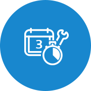
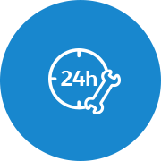
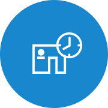
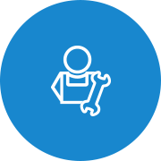
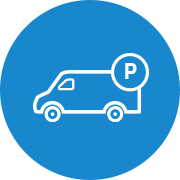

Volkswagen ailesi olarak, Volkswagen’e gelenlerin işleri hep yolunda gitsin diye yeni bir servis hizmeti geliştirdik: Service Plus.
Yolculuğunuzun her anında, iyi günde de kötü günde de yanınızda olan Service Plus ayrıcalıklarıyla tanışın, bir Volkswagen sahibi olmanın ayrıcalığıyla yol alın.
-

3 Gün İçinde Randevu Onayı
Volkswagen Ticari Araç’ın yeni servis hizmeti Service Plus ile en geç 3 gün içinde servis randevunuzu alabilirsiniz. Böylelikle aracınızın ihtiyacını kısa süre içerisinde halleder, işlerinize zaman kaybetmeden devam edebilirsiniz.
-

Esnek Çalışma Saatleri
Volkswagen Ticari Araç olarak zamanın sizin için ne kadar önemli olduğunu biliyoruz. Bu yüzden yeni servis hizmetimiz Service Plus’ın çalışma saatlerini de size göre belirledik. Esnek çalışma saatlerimizle hem gün içinde işinizi aksatmadan ilerletebilir hem de işiniz bittiğinde aracınızı servise getirebilirsiniz.
-

Uzatılmış Çalışma Saatleri
İster sabah erkenden isterseniz de akşam geç saatlerde... İşiniz hiçbir zaman aksamasın diye, Volkswagen Ticari Araç’ın yeni servis hizmeti Service Plus ile aracınızı mesai saatleriniz dışında teslim edebilir ya da teslim alabilirsiniz.
-

Özel Danışman ve Teknisyen Hizmeti
Volkswagen Ticari Araç sahiplerinin ihtiyaçlarının, beklentilerinin ve önceliklerinin birbirinden farklı olduğunu biliyoruz. Yeni servis hizmetlerimiz Service Plus ile bu farklılıklara en doğru şekilde yaklaşmak için, alanında uzman danışman ve teknisyenlerle size en iyi hizmeti vermeyi amaçlıyoruz.
-

Crafter’a Özel Park Alanı
Crafter araçlarının boyutları sebebiyle Crafter sahipleri normal park alanlarına kolayca park etmekte zorlanırlar. Yeni servis hizmetimiz Servis Plus ile Crafter araç sahipleri, araçlarını servise getirdiklerinde park yeri aramakla uğraşmıyor. Onlara ayrılmış özel park yerlerine araçlarını gönül rahatlığıyla park edilebiliyorlar.
SERVICE PLUS HİZMET NOKTALARI